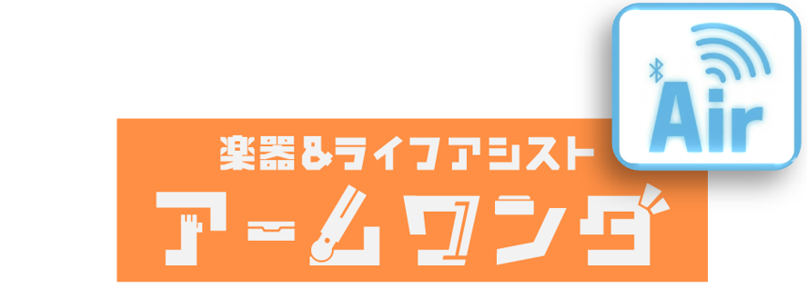

現在のモード: ---
設定するモードを選択
[Windows]
Google Chrome または Microsoft Edge をご使用ください。
[Androidスマートフォン]
Google Chrome または Microsoft Edge をご使用ください。
[iPhone / iPad (iOS)]
SafariやChromeでは動きません。
App Storeから無料アプリ「Bluefy」を使い、本サイトを開いてください。